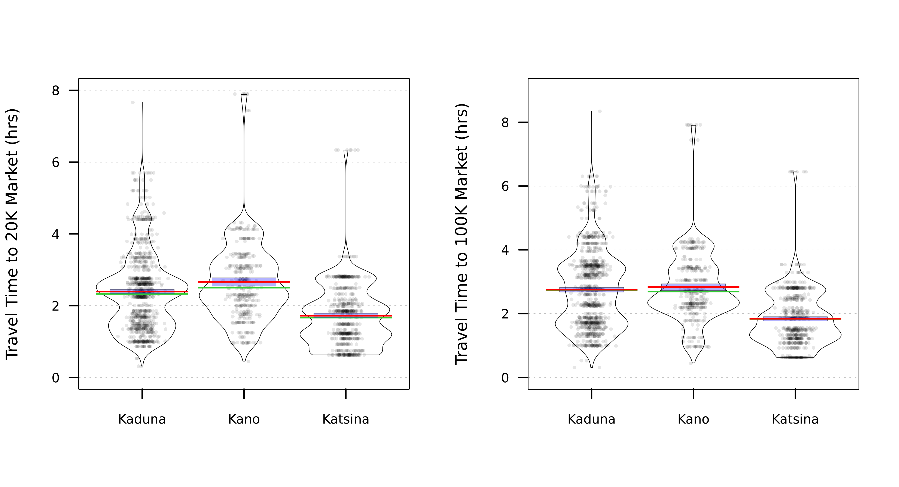

Section 3 Data Summaries
This section provides visual summaries for a sample of variables. All estimates below are across surveyed household locations. Complete results are available in STATA format on Huddle.
Note: the violin (pirate) plots below show median line in red, mean line in green, and the blue region is the inferred 95% confidence interval of the mean.
3.1 Climatic Indicators
3.2 Soil Characteristics
3.3 Drought
3.4 Market Access

Fig. 3.1: Distribution of Travel Times to Market at Household Locations across States (hrs). Source: IFPRI/HarvestChoice.